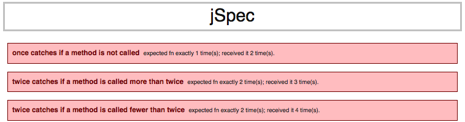
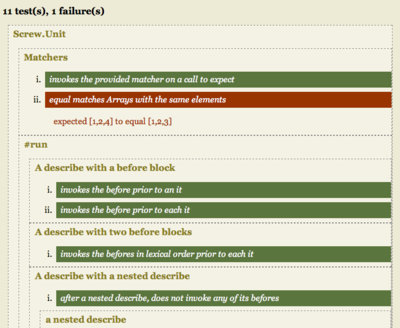

A Survey of Behavior-Driven Development in JavaScript
T.J. VanSlyke
September 4, 2008
describe "Presentation" do
it "has an overview"
- Motivation
- Background
- Technical hurdles to a friendly solution.
- Existing solutions
- The future
- Community forum
Motivation
- No integration of JavaScript testing into developer workflow
- Selenium doesn't cut it for day-to-day unit testing
- Client-side code is becoming more complex
Motivation
- Yet another reason to wake up with keyboard imprints on your face.
jSpec

Features!
- Message expectations with quantifiers like RSpec
- RSpec-like 'should(Not)' predicate syntax
- Nested describe blocks (a la RSpec)
- No originality whatsoever
jSpec: Technical hurdles
JavaScript can perform similarly to Ruby when it comes to syntax-sugar metaprogramming.
# Ruby
class Object
def should(matcher, &block)
do_stuff_with(matcher, block)
end
end
// JavaScript
Object.prototype.should = function(matcher, fn) {
doStuffWith(matcher, fn);
}
jSpec: Technical hurdles
But unfortunately, the grass isn't greener on the client-side.
# Ruby
class Object
def say_hello
puts "Hello!"
end
end
>> nil.a_method
Hello!
// JavaScript
Object.prototype.aMethod = function() {
// do stuff
}
>> null.aMethod();
TypeError: null has no properties.
jSpec: Technical hurdles
Solution: Use a custom selector for all expectations.
jSpec.$ = function(expr)
{
if (expr == null)
{
return new jSpec.NullObject();
}
return expr;
}
jSpec
jSpec.describe('this presentation', function($)
{
var presentation;
$.beforeEach(function() {
presentation = { audience: null, boring: false };
});
$.it("should have an audience", function() {
$.$(presentation.audience).shouldNot().beNull();
});
$.it("should not be boring", function() {
$.$(presentation).shouldNot().be('boring');
});
});
jSpec: Message Expectations
Example
jSpec.describe('this presentation', function($)
{
var presentation;
$.beforeEach(function() {
presentation = {
begin : function() { alert(this.applause); },
applause: 'woooo!'
};
});
$.it("should receive applause", function() {
$.$(presentation).shouldReceive('applause');
presentation.begin();
});
});
RTFG!

Other packages
- Firebug (JavaScript assertions, http://getfirebug.com)
- JsUnit (http://www.jsunit.net/)
- QUnit (http://docs.jquery.com/QUnit)
- JSSpec (http://code.google.com/p/jsspec/)
- Screw.Unit (http://github.com/nkallen/screw-unit/tree/master)
Firebug
- Provides a console API for simple assertions
- Does not provide a test harness for automation
- One platform only (Firefox)
JsUnit
From the JsUnit documentation:
function testWithValidArgs() {
assertEquals("2 times 3 plus 5 is 11", 11, multiplyAndAddFive(2, 3));
assertEquals("Should work with negative numbers", -15, multiplyAndAddFive(-4, 5));
}
function testWithInvalidArgs() {
assertNull("A null argument should result in null", multiplyAndAddFive(2, null));
assertNull("A string argument should result in null", multiplyAndAddFive(2, "a string"));
}
QUnit
From the QUnit documentation:
module("Module A");
test("first test within module", function() {
ok( true, "all pass" );
});
test("second test within module", function() {
ok( true, "all pass" );
});
JSSpec
From the JSSpec documentation:
describe('Plus operator', {
'should concatenate two strings': function() {
value_of("Hello " + "World").should_be("Hello World");
},
'should add two numbers': function() {
value_of(1 + 2).should_be(3);
}
})
Screw.Unit
From the Screw.Unit README:
Screw.Unit is a Behavior-Driven Testing Framework for Javascript. It features nested describes. Its goals are to provide:
- a DSL for elegant, readable, organized specs;
- an interactive runner that can execute focused specs and describes;
- and brief, extensible source-code.
Screw.Unit
RADICAL!
Screw.Unit

Screw.Unit
describe('this presentation', function() {
var presentation;
before(function() {
presentation = { audience: null, boring: false };
});
it("should have an audience", function() {
expect(presentation.audience).to_not(be_null);
});
it("should not be boring", function() {
expect(presentation.boring).to_not(be_true);
});
});
Screw.Unit: Time to get meta up in here.
describe("jquery.slideshow", function() {
describe('nextSlide()', function() {
});
describe('previousSlide()', function() {
});
});
Screw.Unit: Time to get meta up in here.
describe('nextSlide()', function() {
it('increments the slide index', function() {});
it('hides the previous slide', function() {});
it('shows the next slide', function() {});
});
Screw.Unit: Time to get meta up in here.
...
it('increments the slide index', function() {
expect(slideshow.slideIndex()).to(equal, 0);
slideshow.nextSlide();
expect(slideshow.slideIndex()).to(equal, 1);
});
...
Screw.Unit: Time to get meta up in here.
it('hides the current slide', function() {
});
Screw.Unit.shouldReceive('messageExpectations')
In an ideal world:
it('hides the current slide', function() {
expect(slides[0]).to(receive, 'hide'); // ideal...
slideshow.nextSlide();
});
Screw.Unit.shouldReceive('messageExpectations')
In the real world:
...
it('increments the slide index', function() {
expect(slideshow.slideIndex()).to(equal, 0);
slideshow.nextSlide();
expect(slideshow.slideIndex()).to(equal, 1);
});
...
Let's look under the hood...
be_true: {
match: function(expected, actual) {
return actual;
},
failure_message: function(expected, actual, not) {
return 'expected ' + $.print(actual) + (not ? ' to not be true' : ' to be true');
}
},
...
In order to create a 'receive' matcher, the architecture would need to be changed
to accommodate for post-test callbacks such that we could reconcile the expectations
at the end of the test execution.
Stubs and Mocks?
- JSMock
- Roll your own
JSMock
function Presentation() {
this.boring = function() { /* ... */ };
this.audience = function() { /* ... */ };
}
JSMock
function test_PresentationIsTotallyStellar() {
var mockControl = new MockControl();
presentationMock = mockControl.createMock(Presentation);
var soManyPeople = [ 'all', 'of', 'you', 'wonderful', 'beautiful', 'rails', 'enthusiasts' ];
presentationMock.expects().boring().andReturn(false);
presentationMock.expects().audience().andReturn(soManyPeople);
}
JSMock: Yay/Nay
Yay!
- Expectation recording/matching!
Nay!
- Mildly cumbersome syntax
Mock schnell!
Or: One Reason To Love Prototype-Based Languages
// A la RSpec mock()
var mock_schnell = {
field: 'value',
another: 123,
method: function() { return 'some mocked value'; }
};
Roll your own: Yay/Nay
Yay!
- No external libraries and no setup beyond a plain ol' JavaScript object.
Nay!
- No expectation recording/matching
Technical hurdles to be solved
- No automated cross-browser support
- No integration into Rails development workflow (i.e., rake spec)
- No mature message expectation engine
- No mature mocking/stubbing library
THE FUTURE

THE FUTURE
HotRuby
(a.k.a. "We don't need no stinkin' JavaScript!")
- JavaScript virtual machine for Ruby
- Runs opcode compiled by YARV (Yet Another Ruby VM)
- Developed by Yu Kobayashi
- Most grammars are implemented, but it currently lacks exception handling and the majority of Ruby's built-in functions and classes
HotRuby
Maybe someday instead of this:
(function($) {
$.fn.slidesnow = function() {
// ...
};
)(jQuery);
We'll do this:
dom_function :slideshow do |element|
# ...
end
HotRuby
describe "my sweet client-side
Ruby slideshow app" do
before(:each) do
@slideshow = tag(:div).slideshow!
@slides =
[
tag(:div, class => 'slide'),
tag(:div, class => 'slide'),
tag(:div, class => 'slide')
]
@slideshow.stub!(:slides).
and_return(@slides)
end
describe "next_slide" do
it "hides the current slide" do
@slides[0].should_receive(:hide)
@slideshow.next_slide
end
it "increments the slide index" do
@slideshow.slide_index.should == 0
@slideshow.next_slide
@slideshow.slide_index.should == 1
end
it "shows the current slide" do
@slides[1].should_receive(:show)
@slideshow.next_slide
end
end
end
Here is what client-side RSpec could look like...
Note that there isn't much here you couldn't do with RJS; however, also note that
this gives the flexibility to fully-spec running client-side code.
HotRuby: Problems to solve
- We need a full Ruby implementation.
- How do we access the DOM? DOM Events?
- How can we integrate JavaScript tests into our daily rake tasks?
- How can we accommodate for multiple JavaScript implementations?